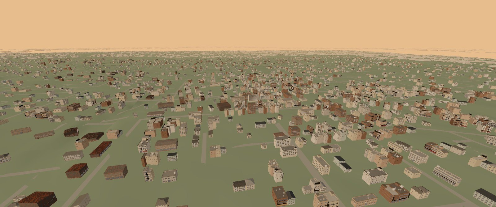

A town, rebuilt from its map.
Griffin, Georgia, as CityKit sees it: the real streets and ground of a Georgia county seat, with every building placed by the generator. Walk the streets or fly over the town in your browser.
Open GriffinWebGL2 · desktop or phone

What CityKit is
CityKit is a toolkit for building cities you can walk through. A city starts as a plan: its ground, water, main roads and districts. CityKit grows the streets, cuts the land into lots and fits a building to each one, then seats every building on the ground so none of them float or sink on a slope. It exports the result in cells a browser can stream in as you move.
What Griffin is
Griffin is a town of about 23,000 people in Spalding County, 60 km south of Atlanta. It was the test for building a city on real terrain. The demo covers the town centre and its neighbourhoods. The streets, rail line, water and ground come from open data. The buildings are generated, with heights calibrated against lidar.
Also built with CityKit
Onkyō Atlas: a fictional Tokyo-scale city generated from one plan file, with its map, railway lines and the places built so far. It is procedural throughout: no map data, no real town.
Where the data comes from
| Layer | Source | Licence |
|---|---|---|
| Streets, main roads, rail, water | OpenStreetMap | ODbL 1.0, © OpenStreetMap contributors |
| Ground elevation (bare-earth DEM) | USGS 3D Elevation Program | Public domain |
| Building heights (calibration) | USGS 3DEP lidar | Public domain |
| Buildings, lots, trees | Generated by CityKit | — |
The map data this site serves (tiles, cells and JSON) is derived from OpenStreetMap and is offered under the ODbL. See ATTRIBUTION.md and LICENSE-DATA.